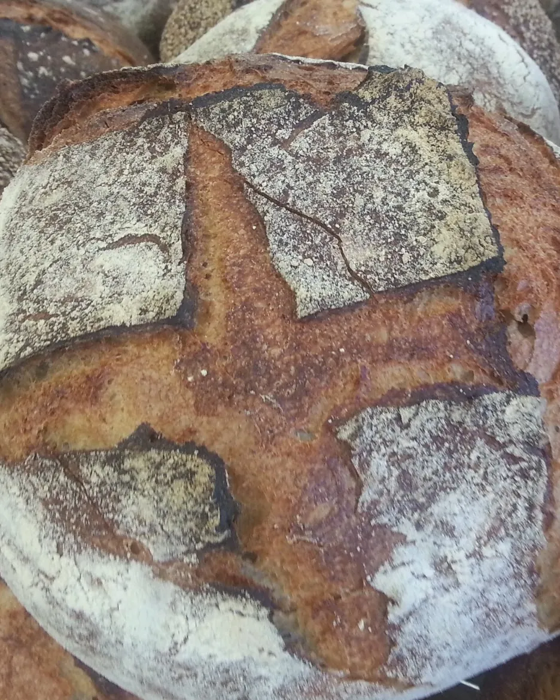
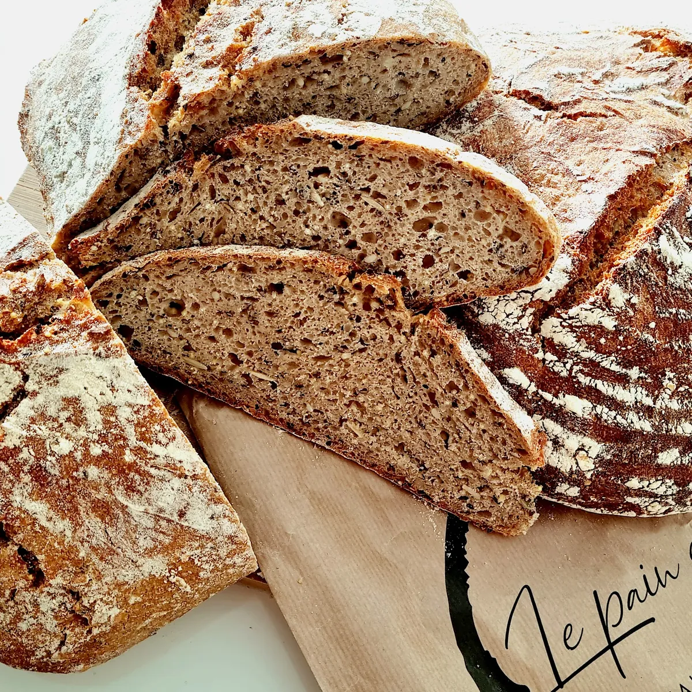
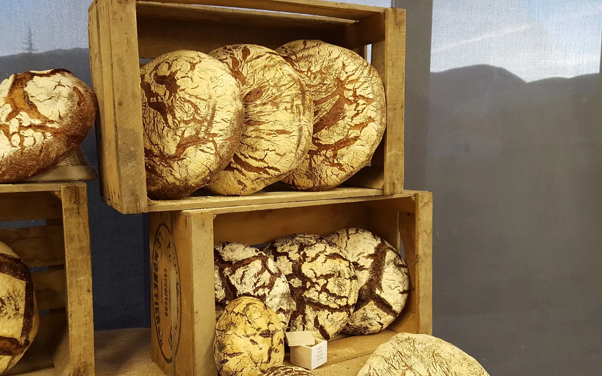
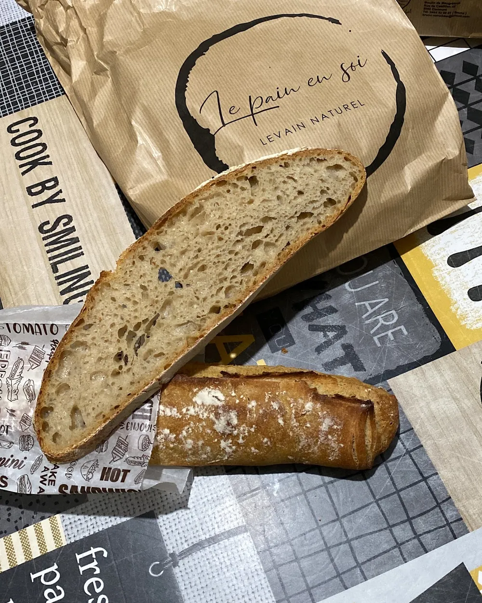
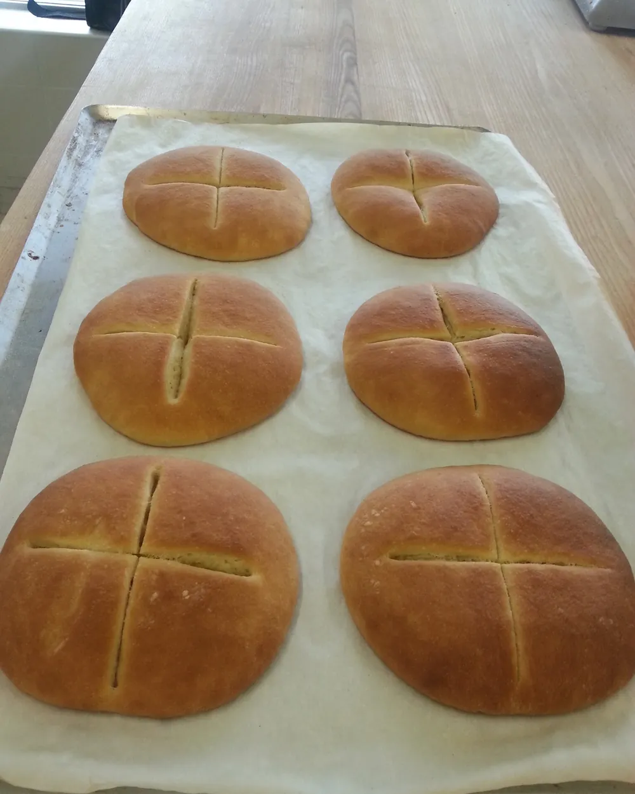
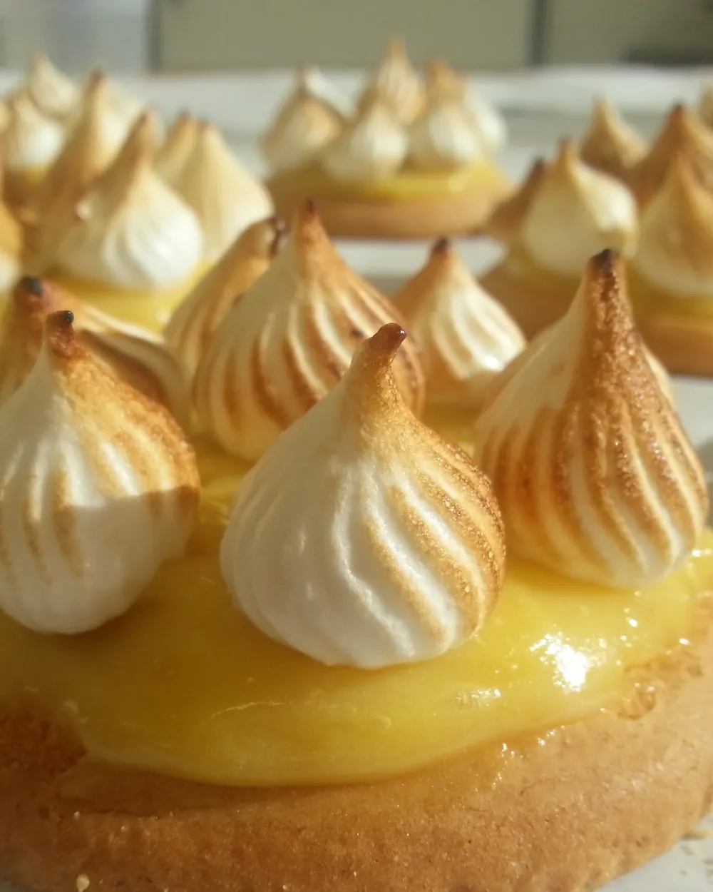
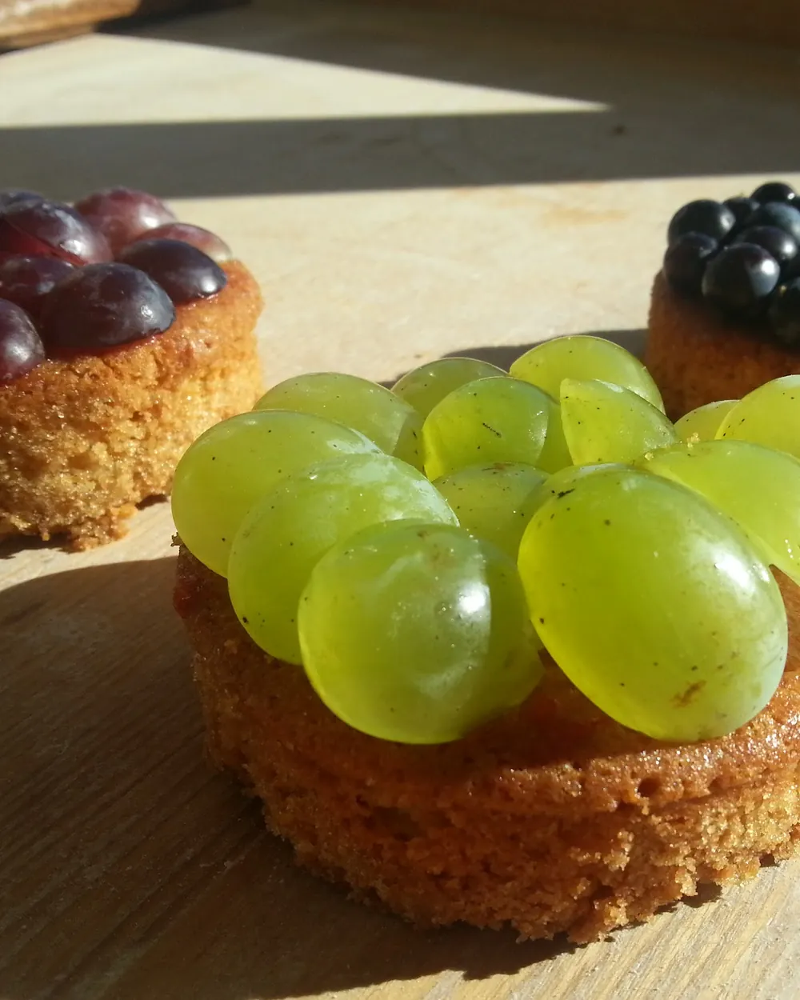
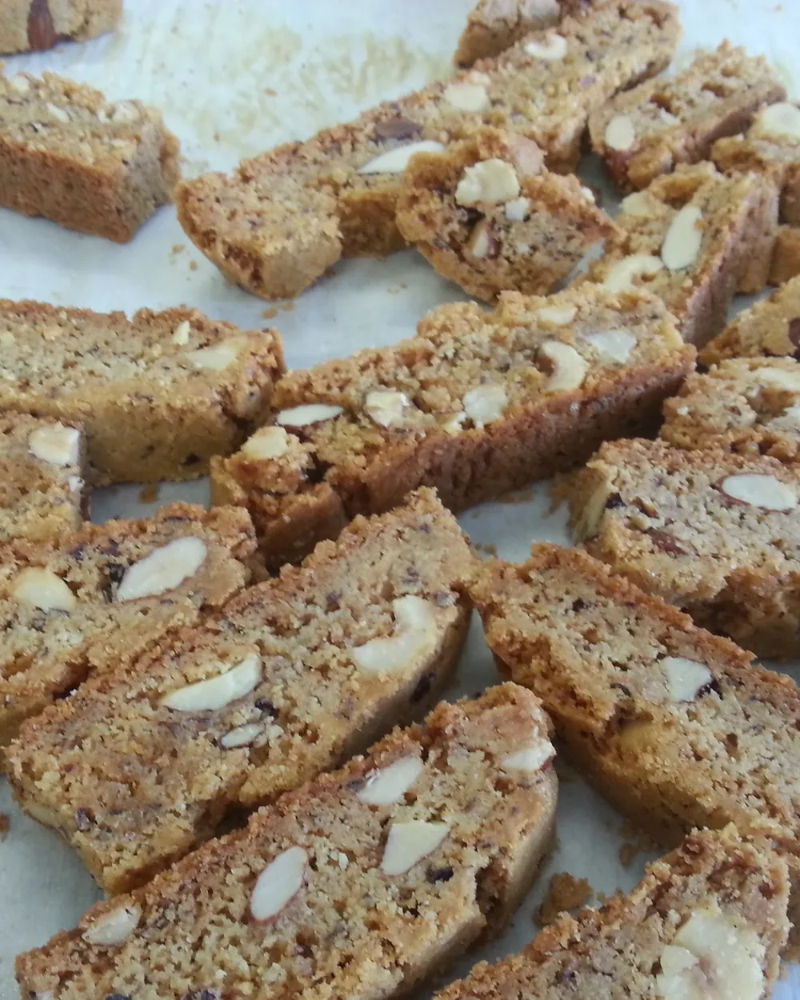
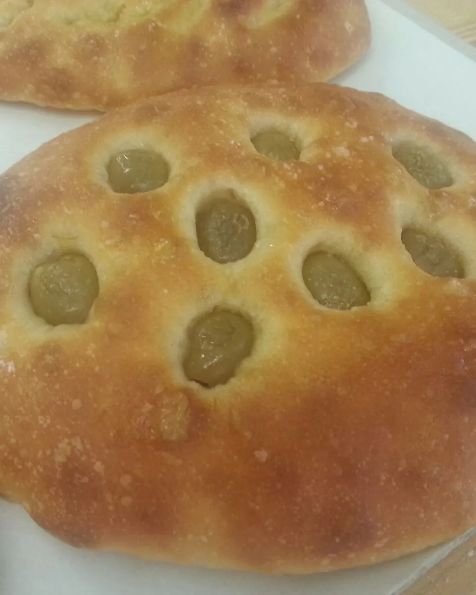
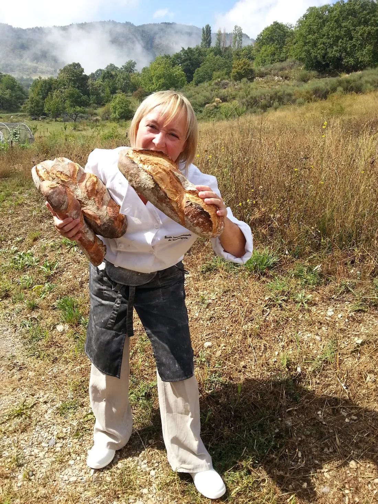

Boulangerie bio · Maredret
Le Painen Soi
Du pain bio au levain naturel, façonné à Maredret, à deux pas de l'abbaye. La boutique ouvre le vendredi après-midi et le samedi matin.
Vendredi 15 h – 18 h · samedi 8 h – 12 h
4,7 sur 5 · 55 avis Google


Un levain maison, une croûte qui craque.
Ici, le pain est bio et lève au levain naturel. Des miches farinées, grignées en croix, une croûte épaisse, une mie sombre et serrée.
Levain naturel
Le pain lève au levain naturel, un levain maison que les clients citent dans leurs avis.
Pain bio
« Pain bio au levain naturel » : c'est la ligne que la boulangerie a choisie pour se présenter.
Avec les artisans du coin
Une cliente le résume : travail en collaboration avec des artisans locaux
.
Une cuisson franche
Une cuisson parfaite avec une croûte croustillante
, écrit une cliente.



Le four ne fait pas que du pain.
Tartelettes au citron ou aux fruits, biscuits aux amandes, pain plat aux olives : quelques douceurs de la maison, en photos.




Envie de savoir ce qui sortira du four vendredi ? Un coup de fil suffit.
Appeler la boulangerieVotre pain mis de côté pour vendredi ou samedi.
La boutique n'ouvre que sept heures par semaine. Dites ce que vous voulez et quand vous passez : votre commande vous attend au comptoir.

deux miches, un grand sourire
Amateurs de bon et vrai pain, sans artifices, cette boulangerie et boulangère sont exceptionnelles.Sophie N., avis Google ★★★★★
Le Pain en Soi est une petite boulangerie artisanale de Maredret, née fin 2017. Un pain naturel, façonné avec amour pour le produit, comme l'écrit cette cliente, et une page Facebook suivie par près de deux mille personnes.
« Le meilleur pain. »
Les mots de ceux qui en ont mangé, tels qu'ils les ont écrits sur Google.
Vendredi après-midi, samedi matin.
Deux rendez-vous par semaine, dans le village de Maredret, à deux pas de l'abbaye.
Ouvert le vendredi de 15 h à 18 h et le samedi de 8 h à 12 h. Fermé du dimanche au jeudi.
Rue Haie des Sarts 11
5537 Maredret (Anhée)